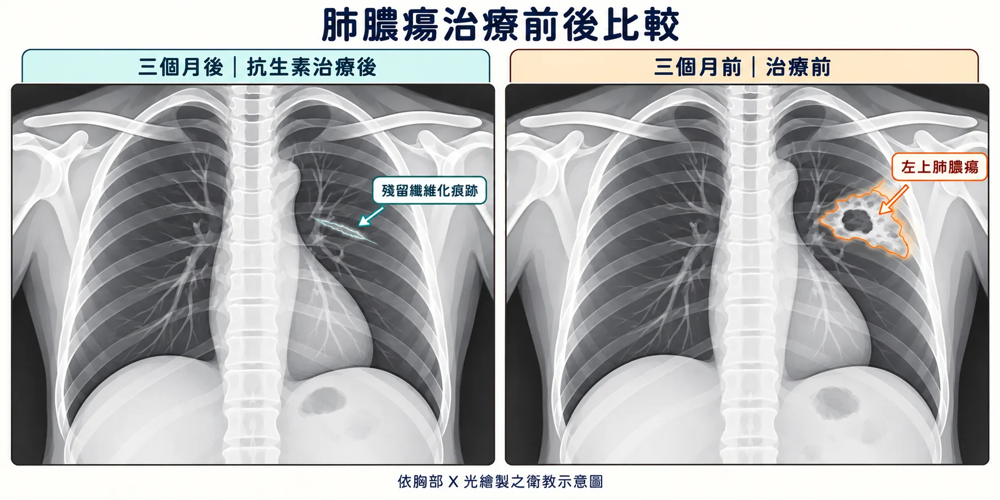

🩺 門診小故事 ｜ 肺膿瘍
以為是肺部腫瘤，
三個月後卻幾乎消失了？

01 ／ 門診故事
肺部的陰影，一步步釐清原因。
一位有三高與抽菸病史的中年男性，帶著對肺部檢查結果的擔心，來找高醫師。
他先前在大醫院照胸部 X 光，發現疑似腫瘤的陰影，也接受了電腦斷層檢查。醫院醫師建議進一步切片，但想到可能是肺癌，又要接受檢查，他既害怕，也十分猶豫。
高醫師重新安排胸部 X 光，與一週前的影像比較，發現一個值得留意的變化：經過抗生素治療，原本的肺部陰影竟然已經縮小約一半！
這個變化讓感染的可能性提高，但高醫師仍鼓勵他：既然影像曾懷疑肺癌，就應依照醫療建議完成必要檢查，不能只因陰影縮小便放心。
考量病人當時仍不願接受切片，高醫師持續向他說明進一步檢查的重要性，同時協助完成抗生素療程，並在接下來一至三個月間，陸續追蹤胸部 X 光。
令人欣慰的是，陰影持續明顯消退。三個月後，原本令人擔心的病灶，僅剩下一絲纖維化痕跡。🌿
整段治療反應與影像變化，都支持肺膿瘍的臨床判斷。這是肺部感染在影像上呈現疑似惡性腫瘤樣貌的案例。
02 ／ 故事重點
前後比較、治療反應與持續追蹤。
這個故事的重點，並不是醫師「一眼就能分辨是不是癌症」，而是透過前後影像比較、治療反應與持續追蹤，一步步釐清原因。感染與腫瘤有時也可能同時存在，因此，必要的檢查與後續追蹤仍不能省略。
這次經歷，也成了他重新照顧自己的契機。他戒掉了菸，開始認真控制三高，從飲食、運動與規律用藥三方面一起努力。💪
肺部的陰影慢慢淡去，
照顧健康的決心，則留了下來。